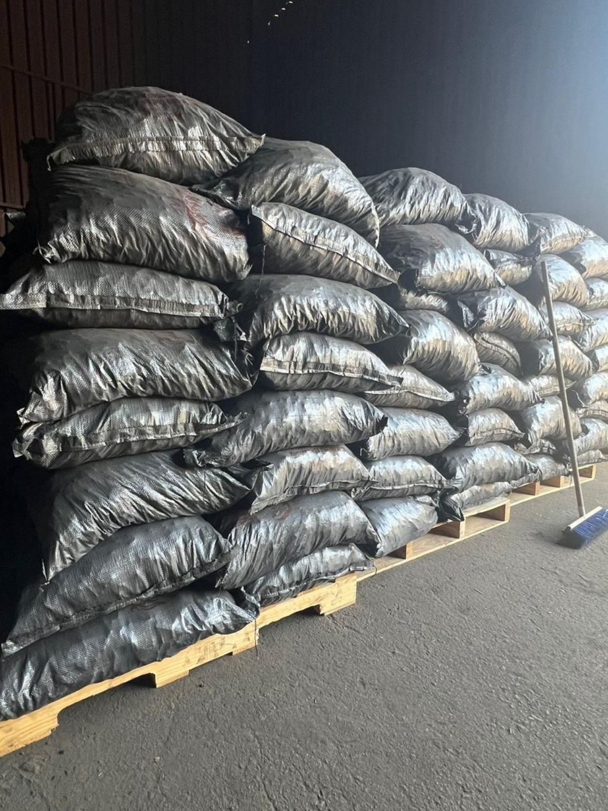
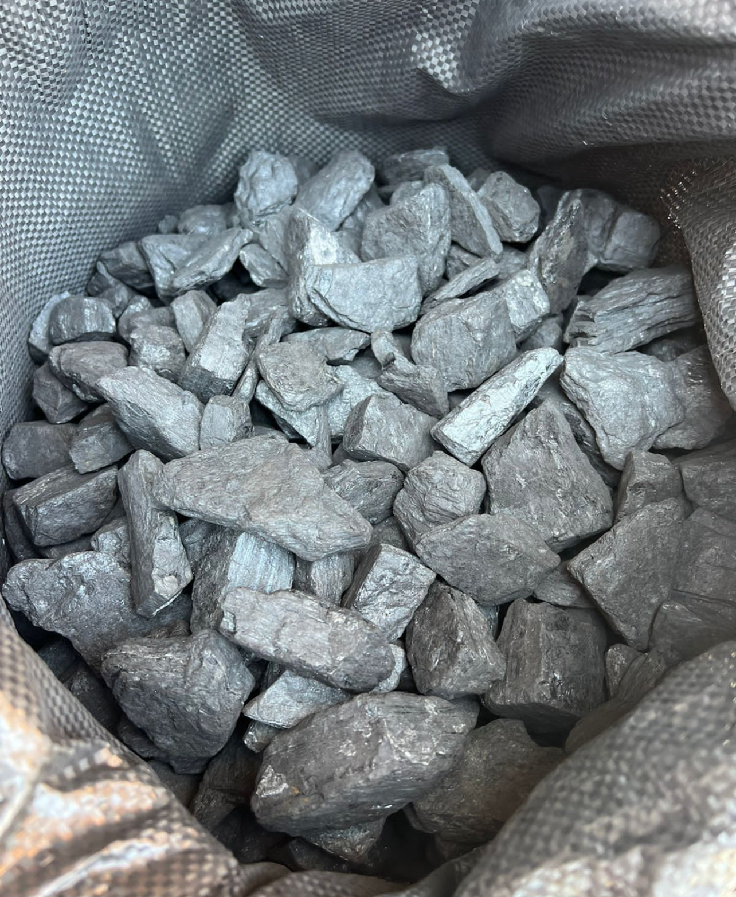
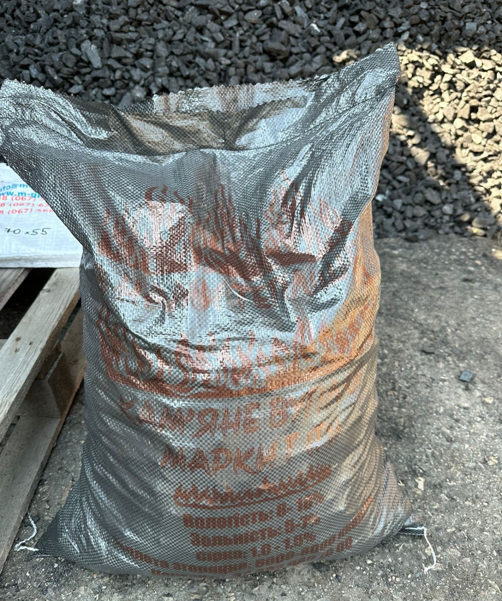

Купити вугілля в Україні
Пропонуємо Вашій увазі ЗБАГАЧЕНЕ ВУГІЛЛЯ найвищої якості! 🔥
Показники:
Вологість: 8-10%
Зольність: 5-7%
Сірка: 1-1,5%
Теплота згорання: 6600 - 8100 ккал/кг
Фасоване, мішок 25кг.



Наше вугілля - це високоякісний продукт, який підходить як для приватного, так і промислового використання. Ми пропонуємо конкурентні ціни та зручні умови доставки.
Зв'язатися з нами